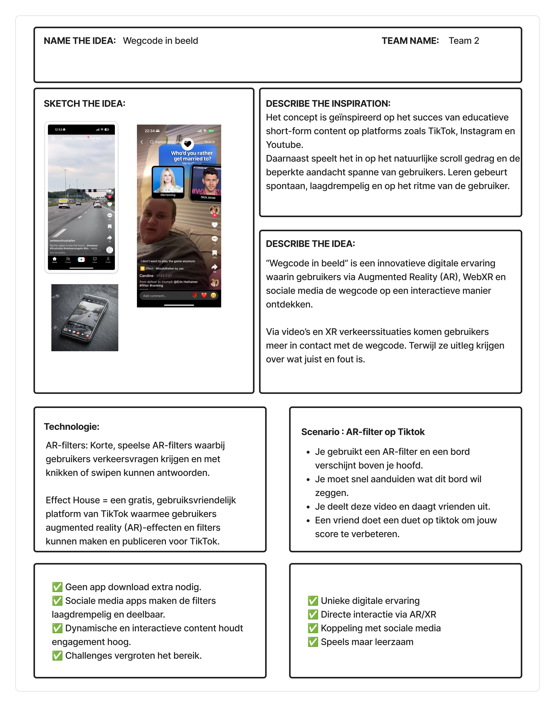

VIAS – Wegcode gaat viraal
Voor het vak Lab 4 Practice Enterprise ontwierpen we een TikTok AR-filter om jongeren spelenderwijs verkeersregels te leren.

Voor het vak Lab 4 Practice Enterprise ontwierpen we een TikTok AR-filter om jongeren spelenderwijs verkeersregels te leren.
In Lab 4 werkten we aan een echte klantopdracht voor VIAS, het Belgisch Instituut voor Verkeersveiligheid. Hun uitdaging: hoe maak je de wegcode aantrekkelijker voor jongeren?
We maakten een BOC-document om richting te bepalen en ontwikkelden schetsen en een conceptcard. Zo kwamen we tot ons idee: een TikTok AR-filter.
Met ViaPlay maakten we een TikTok-filter waar verkeersborden boven je hoofd verschijnen. Gebruikers moeten snel reageren, krijgen directe feedback en kunnen scores delen of vrienden uitdagen. Hier is de eerste versie die we hadden gemaakt.
Dit project leerde me werken in een professionele context met klantcommunicatie en teamwork. Ik ontdekte hoe je complexe materie zoals de wegcode kunt vertalen naar iets luchtigs en speels met AR-technologie. Een volgende keer zou ik nog meer iteraties doen met feedback van de doelgroep zelf.